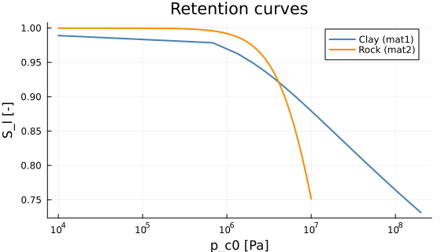
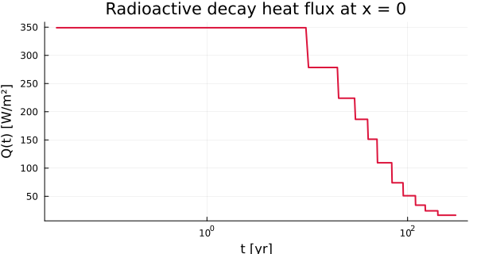
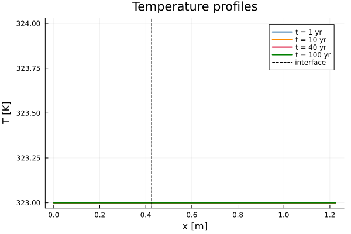
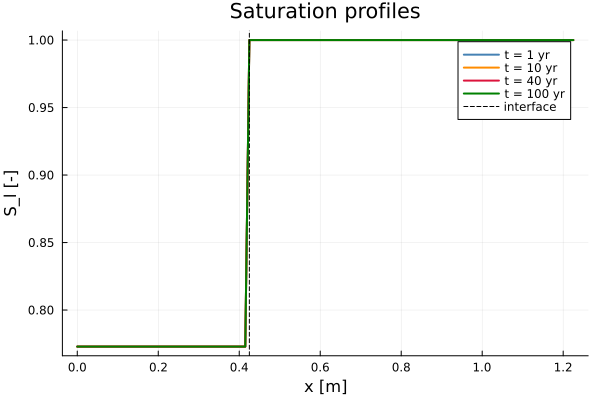

Non-isothermal Drying
Non-isothermal two-phase flow in an unsaturated porous barrier heated by a radioactive source, on VoronoiFVM.jl. The benchmark is an engineered barrier of a waste repository: a compacted clay plug surrounded by host rock.
Geometry and boundary conditions
x = 0 (left) x = 0.425 m x = L = 1.225 m (right)
heat flux Q(t) → (interface) Dirichlet p_l, p_a, T
│ │ │
│ COMPACTED CLAY (mat1) │ HOST ROCK (mat2) │
│ φ = 0.30 │ φ = 0.05 │
│ k = 1e-20 m² │ k = 1e-19 m² │
│ λs = 1.12 W/(m·K) │ λs = 1.62 W/(m·K) │
x=0 x_int x=L
←── drying front ──────| Boundary | Unknown | Condition | Value |
|---|---|---|---|
| $x = 0$ (left) | $T$ | Neumann | heat flux $Q(t)$ [W/m²] |
| $x = L$ (right) | $p_l$ | Dirichlet | $4.905 \times 10^6$ Pa |
| $x = L$ (right) | $p_a$ | Dirichlet | $4.892 \times 10^6$ Pa |
| $x = L$ (right) | $T$ | Dirichlet | $323$ K |
The heat flux at $x = 0$ models radioactive decay: it decreases from about 350 W/m² at 10 yr to about 60 W/m² at 300 yr, supplied as a piecewise-linear table $F(t)$ [J/m²].
| Zone | $p_l$ (Pa) | $p_a$ (Pa) | $T$ (K) |
|---|---|---|---|
| Clay (mat1) | $-7.612 \times 10^7$ | $9.226 \times 10^4$ | 323 |
| Rock (mat2) | $4.905 \times 10^6$ | $4.892 \times 10^6$ | 323 |
The clay starts strongly under-saturated ($p_c \approx 7.6 \times 10^7$ Pa, $S_l \approx 0.78$); the host rock is nearly saturated.
Governing equations
Three coupled unknowns per point, $\mathbf{u} = (p_l,\; p_a,\; T)$.
The vapour pressure follows the modified Kelvin equation, coupling liquid pressure, temperature and the enthalpies of phase change:
\[p_v = p_{v0}\,\exp\!\left(\frac{M_v/R}{T}\left[ \frac{p_l - p_{l0}}{\rho_l} + \frac{L_0\,\theta}{T_0} + (C_{pl} - C_{pv})\left(\theta - T\ln\frac{T}{T_0}\right) \right]\right), \qquad \theta = T - T_0\]
\[p_g = p_v + p_a, \qquad p_c = p_g - p_l, \qquad p_{c0} = \frac{p_c}{1 - \alpha\,\theta}\]
The reduced capillary pressure $p_{c0}$ carries the thermal shift of the retention curves ($\alpha = 3 \times 10^{-3}$ K⁻¹).
The three balances are total water (liquid + vapour), dry air, and entropy — the last being equivalent to the energy balance:
\[\frac{\partial}{\partial t}\!\left(\rho_l\,\phi\,S_l + \rho_v\,\phi\,S_g\right) + \nabla \cdot (\mathbf{W}_l + \mathbf{W}_v) = 0\]
\[\frac{\partial}{\partial t}\!\left(\rho_a\,\phi\,S_g\right) + \nabla \cdot \mathbf{W}_a = 0, \qquad \frac{\partial S_{\rm sys}}{\partial t} + \nabla \cdot \mathbf{J}_s = 0\]
The liquid flux is Darcy, the vapour and dry-air fluxes combine Darcy and Fick, with a Millington-Quirk tortuosity:
\[\mathbf{W}_l = -K_l\,\nabla p_l, \qquad \mathbf{W}_v = -K_{D,v}\,\nabla p_g - K_{F,v}\,\nabla c_v\]
\[D_{\rm eff} = \phi\,S_g\,\tau\,D_{av}, \quad \tau = \phi^{1/3}\,S_g^{7/3}, \quad D_{av} = D_{av0}\,\frac{p_{v0}+p_{a0}}{p_g}\left(\frac{T}{T_0}\right)^{1.88}\]
The total entropy flux and the thermal conductivity (geometric mean, Johansen):
\[\mathbf{J}_s = \frac{\mathbf{Q}}{T} + s_l\,\mathbf{W}_l + s_v\,\mathbf{W}_v + s_a\,\mathbf{W}_a, \qquad \mathbf{Q} = -K_{\rm TH}\,\nabla T\]
\[K_{\rm TH} = \lambda_s^{1-\phi}\,\lambda_l^{\phi S_l}\,\lambda_g^{\phi S_g}\]
The volumetric entropy of the system carries a capillary term evaluated by 3-point Gauss quadrature:
\[S_{\rm sys} = C_s\ln\frac{T}{T_0} - \phi\!\int_0^{p_c}\frac{\partial S_l}{\partial T}(p_c')\,\mathrm{d}p_c' + M_l\,s_l + M_v\,s_v + M_a\,s_a\]
Why the entropy flux carries $s_v \mathbf{W}_v$
The specific entropy of vapour is dominated by the latent-heat term:
\[s_v = C_{pv}\ln\frac{T}{T_0} - \frac{\ln(p_v/p_{v0})}{M_v/R} + \frac{L_0}{T_0}\]
At $T = 323$ K this gives $s_v \approx 8360$ J/(kg·K), against $s_l \approx 406$ J/(kg·K) for liquid water. Vapour carries 21 times more entropy per kilogram, so even its small mass flux markedly amplifies the apparent thermal conductivity — the thermal vapour distillation effect of Philip & de Vries (1957).
using PoroMechanics
using VoronoiFVM
using ExtendableGrids
using PrintfData structures
"""
Parameters of one material for model M6 (non-isothermal drying).
Two instances are embedded in `DryingModel`: clay (mat1) and rock (mat2).
"""
struct DryingMaterial{T, R, K}
phi::T # porosity [-]
k_int::T # intrinsic permeability [m²]
lam_s::T # solid thermal conductivity [W/(m·K)]
C_s::T # volumetric heat capacity [J/(m³·K)]
retention::R # S_l(p_c), regularised near saturation
rel_perm::K # k_rl(p_c)
end
# Promote rather than require a single type: differentiating with respect to one
# coefficient makes that field a `Dual` while the others stay `Float64`.
function DryingMaterial(phi, k_int, lam_s, C_s, retention, rel_perm)
return DryingMaterial(promote(phi, k_int, lam_s, C_s)..., retention, rel_perm)
end
"""
DryingModel
Model M6 — thermo-hydric drying of an unsaturated porous medium, 2 materials.
**Primary unknowns:** liquid pressure `p_l` [Pa], dry air pressure `p_a` [Pa],
temperature `T` [K].
**Geometry:** 1D domain `[0, L]` with an interface at `x_int` separating clay and rock.
**Boundary conditions:**
- `x = 0` : Neumann heat flux `Q(t)` [W/m²] (radioactive canister)
- `x = L` : Dirichlet `p_l`, `p_a`, `T` (initial values of the rock)
"""
Base.@kwdef struct DryingModel{T, M1, M2} <: AbstractPoroModel
# ── Parameters common to both materials ───────────────────────────────────
rho_l::T = 1000.0 # liquid density [kg/m³]
mu_l::T = 1.0e-3 # liquid viscosity [Pa·s]
mu_g::T = 1.8e-5 # gas viscosity [Pa·s]
M_vsR::T = 0.00216 # M_vapeur/R [kg/J]
M_asR::T = 0.00346 # M_air/R [kg/J]
p_l0::T = 1.0e5 # reference liquid pressure [Pa]
p_v0::T = 2460.0 # saturated vapour pressure at T₀ [Pa]
p_a0::T = 97540.0 # reference air pressure [Pa]
T_0::T = 293.0 # reference temperature [K]
D_av0::T = 0.00248 # air-vapour diffusion at T₀ [m²/s]
lam_l::T = 0.6 # liquid thermal conductivity [W/(m·K)]
lam_g::T = 0.026 # gas thermal conductivity [W/(m·K)]
C_pl::T = 4180.0 # liquid specific heat [J/(kg·K)]
C_pv::T = 1800.0 # vapour specific heat [J/(kg·K)]
C_pa::T = 1000.0 # dry air specific heat [J/(kg·K)]
L_0::T = 2.45e6 # latent heat of vaporisation [J/kg]
alpha_T::T = 0.003 # thermal variation coeff. of S_l [1/K]
# ── Geometry ───────────────────────────────────────────────────────────────
x_int::T = 0.425 # interface position [m]
L::T = 1.225 # total length [m]
# ── Materials ──────────────────────────────────────────────────────────────
# The exponents are the published values, not recomputed from m: the fitted n of
# 1.06383 differs from 1/(1-0.06) = 1.0638297… in the last digits, and the
# three-argument `VanGenuchten` keeps them as given.
mat1::M1 = DryingMaterial( # compacted clay
0.30, 1.0e-20, 1.12, 2.3e6,
ExponentialCutoff(VanGenuchten(1.5e6, 1.06383, 0.06), 1.0e6),
PowerLawKrl(3.0e6, 2.0, 0.5),
)
mat2::M2 = DryingMaterial( # host rock
0.05, 1.0e-19, 1.62, 2.0e6,
ExponentialCutoff(VanGenuchten(10.0e6, 1.7, 0.4117), 2.0e5),
PowerLawKrl(10.0e6, 2.0, 1.0),
)
# ── Initial conditions (reference case, fields 1-5) ───────────────────────
p_l_ini1::T = -7.611655e7 # p_l in the clay zone [Pa]
p_a_ini1::T = 9.225595e4 # p_a in the clay zone [Pa]
p_l_ini2::T = 4.905e6 # p_l in the rock zone [Pa]
p_a_ini2::T = 4.891671e6 # p_a in the rock zone [Pa]
T_ini::T = 323.0 # initial temperature (zones 1 and 2) [K]
end
PoroMechanics.nspecies(::DryingModel) = 3
# Promote rather than require a single type: differentiating with respect to one parameter
# makes that field a `Dual` while the rest stay `Float64`, which is what `@kwdef` alone
# cannot express.
function DryingModel(rho_l, mu_l, mu_g, M_vsR, M_asR, p_l0, p_v0, p_a0, T_0, D_av0, lam_l, lam_g, C_pl, C_pv, C_pa, L_0, alpha_T, x_int, L, mat1, mat2, p_l_ini1, p_a_ini1, p_l_ini2, p_a_ini2, T_ini)
scalars = promote(rho_l, mu_l, mu_g, M_vsR, M_asR, p_l0, p_v0, p_a0, T_0, D_av0, lam_l, lam_g, C_pl, C_pv, C_pa, L_0, alpha_T, x_int, L, p_l_ini1, p_a_ini1, p_l_ini2, p_a_ini2, T_ini)
return DryingModel(scalars[1:19]..., mat1, mat2, scalars[20:end]...)
end
PoroMechanics.species_names(::DryingModel) = [:p_l, :p_a, :T]
# Indices of the unknowns (VoronoiFVM species)
const U_PL = 1
const U_PA = 2
const U_TEM = 33Retention curves
The curves themselves live in the package's constitutive layer; only the dispatch by material stays here.
_Sl(mat::DryingMaterial, pc) = saturation(mat.retention, pc)
_dSl(mat::DryingMaterial, pc) = dsaturation_dpc(mat.retention, pc)
_krl(mat::DryingMaterial, pc) = relative_permeability(mat.rel_perm, pc)
_krg(sl) = gas_relative_permeability(sl)
function _get_mat(m::DryingModel, x::Real)
x < m.x_int ? m.mat1 : m.mat2
end_get_mat (generic function with 1 method)Kelvin equation
"""
Vapour pressure p_v(p_l, T) — modified Kelvin equation.
"""
function _p_vapor(m::DryingModel, pl::Real, T::Real)
θ = T - m.T_0
return m.p_v0 * exp(m.M_vsR / T * (
(pl - m.p_l0) / m.rho_l
+ m.L_0 * θ / m.T_0
+ (m.C_pl - m.C_pv) * (θ - T * log(T / m.T_0))
))
endMain._p_vaporCapillary entropy term
const _gauss_a = (0.93246951420, 0.66120938646, 0.23861918608)
const _gauss_w = (0.17132449237, 0.36076157304, 0.46791393457)
function _dSsdT(m::DryingModel, mat::DryingMaterial, pc::Real, θ::Real)
at = 1.0 - m.alpha_T * θ
at <= 0 && return 0.0
pc0 = pc / at
return _dSl(mat, pc0) * pc0 * m.alpha_T / at
end
function _compute_dUsdT(m::DryingModel, mat::DryingMaterial, pc::Real, θ::Real)
pc <= 0 && return 0.0
h = pc / 2.0
dU = 0.0
for j in 1:3
dU += _gauss_w[j] * (
_dSsdT(m, mat, h * (1.0 + _gauss_a[j]), θ) +
_dSsdT(m, mat, h * (1.0 - _gauss_a[j]), θ)
)
end
return dU * h
end_compute_dUsdT (generic function with 1 method)Imposed heat flux
# Cumulative heat table F(t) [J/m²] of the reference case.
# Instantaneous flux Q(t) = dF/dt.
# ============================================================
const _t_F = [0.0, 3.1536e8, 6.3072e8, 9.4608e8, 1.26144e9, 1.5768e9,
2.20752e9, 2.83824e9, 3.78432e9, 4.7304e9, 6.3072e9, 9.4608e9]
const _F_val = [0.0, 1.1006064e11, 1.978884e11, 2.6852904e11, 3.2734368e11,
3.7504188e11, 4.4410572e11, 4.90779e11, 5.3902908e11,
5.71526928e11, 6.09764328e11, 6.61641048e11]
"""Heat flux Q(t) [W/m²] injected at x=0 (piecewise-linear interpolation)."""
function _heat_flux(t::Real)
t <= 0 && return 0.0
t >= _t_F[end] && return (_F_val[end] - _F_val[end-1]) /
(_t_F[end] - _t_F[end-1])
for i in 2:lastindex(_t_F)
t <= _t_F[i] && return (_F_val[i] - _F_val[i-1]) / (_t_F[i] - _t_F[i-1])
end
return 0.0
end
# ── Time data (must live at module level, not inside a function) ──────────────
mutable struct DryingData
t::Float64
endVoronoiFVM callbacks
"""
Storage term at a node.
- `f[U_PL]` = M_l + M_v — total water mass (liquid + vapour)
- `f[U_PA]` = M_a — dry air mass
- `f[U_TEM]` = S — volumetric entropy
"""
function PoroMechanics.storage!(f, u, node, m::DryingModel, ::Any)
mat = _get_mat(m, node.coord[1])
φ = mat.phi
Cs = mat.C_s
pl = u[U_PL]; pa = u[U_PA]; T = u[U_TEM]
θ = T - m.T_0
pv = _p_vapor(m, pl, T)
pg = pv + pa
pc = pg - pl
at = 1.0 - m.alpha_T * θ
pc0 = pc / at
sl = _Sl(mat, pc0); sg = 1.0 - sl
ρv = pv * m.M_vsR / T
ρa = pa * m.M_asR / T
Ml = m.rho_l * φ * sl
Mv = ρv * φ * sg
Ma = ρa * φ * sg
s_l = m.C_pl * log(T / m.T_0)
s_v = m.C_pv * log(T / m.T_0) - log(pv / m.p_v0) / m.M_vsR + m.L_0 / m.T_0
s_a = m.C_pa * log(T / m.T_0) - log(pa / m.p_a0) / m.M_asR
dU = _compute_dUsdT(m, mat, pc, θ)
f[U_PL] = Ml + Mv
f[U_PA] = Ma
f[U_TEM] = Cs * log(T / m.T_0) - φ * dU + Ml * s_l + Mv * s_v + Ma * s_a
end
"""
Numerical flux on an edge.
Convention VoronoiFVM : `f[s] = K·(u₁ - u₂)` ↔ `W = f[s]/(x₂ - x₁)`.
- `f[U_PL]` = W_l + W_v — flux d'eau total (Darcy + Fick)
- `f[U_PA]` = W_a — flux d'air sec
- `f[U_TEM]` = J_s — flux d'entropie = Q/T + s_l·W_l + s_v·W_v + s_a·W_a
"""
function PoroMechanics.flux!(f, u, edge, m::DryingModel, ::Any)
x_m = (edge.coord[1, 1] + edge.coord[1, 2]) / 2.0
mat = _get_mat(m, x_m)
φ = mat.phi
ki = mat.k_int
λs = mat.lam_s
pl1, pl2 = u[U_PL, 1], u[U_PL, 2]
pa1, pa2 = u[U_PA, 1], u[U_PA, 2]
T1, T2 = u[U_TEM, 1], u[U_TEM, 2]
plm = (pl1 + pl2) / 2.0
pam = (pa1 + pa2) / 2.0
Tm = (T1 + T2 ) / 2.0
θm = Tm - m.T_0
at = 1.0 - m.alpha_T * θm
pvm = _p_vapor(m, plm, Tm)
pgm = pvm + pam
pcm = pgm - plm
pc0m = pcm / at
slm = _Sl(mat, pc0m); sgm = 1.0 - slm
ρvm = pvm * m.M_vsR / Tm
ρam = pam * m.M_asR / Tm
ρgm = ρvm + ρam
cvm = ρvm / ρgm; cam = 1.0 - cvm
# Darcy conductivities
Kl = m.rho_l * ki / m.mu_l * _krl(mat, pc0m)
krg = _krg(slm)
KDv = ρvm * ki / m.mu_g * krg
KDa = ρam * ki / m.mu_g * krg
# Fick diffusion — Millington-Quirk tortuosity
τ = φ^(1.0 / 3.0) * max(sgm, 0.0)^(7.0 / 3.0)
Dav = m.D_av0 * (m.p_v0 + m.p_a0) / pgm * (Tm / m.T_0)^1.88
Def = φ * sgm * τ * Dav
KFv = ρgm * Def; KFa = KFv
bar = Def * cvm * cam / Tm
KDv += bar * (m.M_asR - m.M_vsR)
KDa += bar * (m.M_vsR - m.M_asR)
# Thermal conductivity — Johansen geometric mean
KTH = λs^(1.0 - φ) * m.lam_l^(φ * slm) * m.lam_g^(φ * sgm)
# Pressures and mass fractions at the nodes
pv1 = _p_vapor(m, pl1, T1); pg1 = pv1 + pa1
pv2 = _p_vapor(m, pl2, T2); pg2 = pv2 + pa2
ρg1 = pv1 * m.M_vsR / T1 + pa1 * m.M_asR / T1
ρg2 = pv2 * m.M_vsR / T2 + pa2 * m.M_asR / T2
cv1 = pv1 * m.M_vsR / T1 / ρg1; ca1 = 1.0 - cv1
cv2 = pv2 * m.M_vsR / T2 / ρg2; ca2 = 1.0 - cv2
# Elementary fluxes
Wl = Kl * (pl1 - pl2)
Wv = KDv * (pg1 - pg2) + KFv * (cv1 - cv2)
Wa = KDa * (pg1 - pg2) + KFa * (ca1 - ca2)
# Flux d'entropie
s_lm = m.C_pl * log(Tm / m.T_0)
s_vm = m.C_pv * log(Tm / m.T_0) - log(pvm / m.p_v0) / m.M_vsR + m.L_0 / m.T_0
s_am = m.C_pa * log(Tm / m.T_0) - log(pam / m.p_a0) / m.M_asR
Js = KTH / Tm * (T1 - T2) + s_lm * Wl + s_vm * Wv + s_am * Wa
f[U_PL] = Wl + Wv
f[U_PA] = Wa
f[U_TEM] = Js
end
"""
Boundary conditions:
- Region 1 (x = 0) : Neumann heat flux `Q(t) / T_node`
- Region 2 (x = L) : Dirichlet `p_l`, `p_a`, `T` (initial rock values)
`data.t` must hold the current time (updated before each segment).
"""
function PoroMechanics.bcondition!(f, u, node, m::DryingModel, data)
# Right (x = L): Dirichlet, initial values of zone 2
boundary_dirichlet!(f, u, node; species = U_PL, region = 2, value = m.p_l_ini2)
boundary_dirichlet!(f, u, node; species = U_PA, region = 2, value = m.p_a_ini2)
boundary_dirichlet!(f, u, node; species = U_TEM, region = 2, value = m.T_ini)
# Left (x = 0): incoming entropy flux = Q / T
# VoronoiFVM convention: boundary_neumann!(value = v) does f[s] -= v,
# which adds +v to the residual → v > 0 for an incoming entropy source.
if node.region == 1
Q = _heat_flux(data.t)
boundary_neumann!(f, u, node; species = U_TEM, region = 1,
value = Q / max(u[U_TEM], 200.0))
end
endPoroMechanics.bcondition!Constitutive behaviour in pictures
These curves are drawn with the very functions the solver calls — no re-implementation.
using Plots
m0 = DryingModel()
pc_clay = range(1.0e4, 2.0e8; length = 300)
pc_rock = range(1.0e4, 1.0e7; length = 300)
p_ret = plot(;
xlabel = "p_c0 [Pa]", ylabel = "S_l [-]", title = "Retention curves",
xscale = :log10, legend = :topright, size = (560, 320),
)
plot!(p_ret, pc_clay, [_Sl(m0.mat1, pc) for pc in pc_clay]; lw = 2, color = :steelblue, label = "Clay (mat1)")
plot!(p_ret, pc_rock, [_Sl(m0.mat2, pc) for pc in pc_rock]; lw = 2, color = :darkorange, label = "Rock (mat2)")
p_ret
The Kelvin equation must return p_v0 at the reference state — a cheap consistency check on the coefficients.
@printf("p_v(p_l0, T_0) = %.2f Pa (expected %.2f Pa)\n", _p_vapor(m0, m0.p_l0, m0.T_0), m0.p_v0)p_v(p_l0, T_0) = 2460.00 Pa (expected 2460.00 Pa)The heat flux imposed at $x = 0$ follows radioactive decay.
yr = 3.1536e7
t_v = range(1.0e6, 9.5e9; length = 500)
plot(
t_v ./ yr, _heat_flux.(t_v);
xlabel = "t [yr]", ylabel = "Q(t) [W/m²]",
title = "Radioactive decay heat flux at x = 0",
xscale = :log10, lw = 2, color = :crimson, legend = false, size = (600, 320),
)
Solving
"""
run_drying(; Nx1=43, Nx2=80, n_years=100, verbose=false)
Solve the M6 non-isothermal drying problem and return
`(model, x_all, results)` where `results` is a vector of tuples
`(t [s], u [n_species × n_nodes])`.
# Arguments
- `Nx1` : number of nodes in the clay zone `[0, x_int]`
- `Nx2` : number of nodes in the rock zone `[x_int, L]`
- `n_years` : maximum simulated duration [years]
- `verbose` : print per-segment diagnostics
# Returns
- `model` : an `DryingModel` instance
- `x_all` : vector of nodal positions [m]
- `results` : `[(t₁, u₁), …, (tₙ, uₙ)]`
"""
function run_drying(; Nx1=43, Nx2=80, n_years=100, verbose=false)
m = DryingModel()
# ── Two-material grid ─────────────────────────────────────────────────────
x1 = collect(range(0.0, m.x_int; length = Nx1))
x2 = collect(range(m.x_int, m.L; length = Nx2))
x_all = vcat(x1, x2[2:end])
grid = simplexgrid(x_all)
grid[CellRegions][1:Nx1-1] .= 1 # clay zone
grid[CellRegions][Nx1:end] .= 2 # rock zone
# `data` carries the current time to the heat-flux boundary condition.
data = DryingData(0.0)
sys = fvm_system(m, grid; species = [U_PL, U_PA, U_TEM], data = data)
# ── Condition initiale ────────────────────────────────────────────────────
inival = unknowns(sys)
for i in eachindex(x_all)
if x_all[i] < m.x_int
inival[U_PL, i] = m.p_l_ini1
inival[U_PA, i] = m.p_a_ini1
else
inival[U_PL, i] = m.p_l_ini2
inival[U_PA, i] = m.p_a_ini2
end
inival[U_TEM, i] = m.T_ini
end
# IC/BC consistency on the right
inival[U_PL, end] = m.p_l_ini2
inival[U_PA, end] = m.p_a_ini2
inival[U_TEM, end] = m.T_ini
# ── Output times ──────────────────────────────────────────────────────────
yr = 3.1536e7 # 1 year [s]
tsave = [0.0, yr, 2yr, 4yr, 6yr, 8yr, 10yr, 20yr, 40yr, 50yr, n_years*yr]
# ── Solver parameters (tuned on the reference case) ──────────────────────
ctrl = VoronoiFVM.SolverControl(;
Δt = 1.0e2, # Dtini [s]
Δt_max = 3.1536e7, # Dtmax [s] = 1 year
Δt_min = 1.0e-2,
Δu_opt = 1.0e4, # OBJE p_l = p_a = 1e4 Pa, tem = 1 K
reltol = 1.0e-6,
abstol = 1.0e-10,
verbose = false,
)
# ── Time loop — data.t updated before each segment ────────────────────────
results = Tuple{Float64, Matrix{Float64}}[]
u_cur = copy(inival)
for k in 2:lastindex(tsave)
t0 = tsave[k-1]
t1 = tsave[k]
data.t = t1
seg = solve(sys; inival = u_cur, times = [t0, t1], control = ctrl)
u_new = seg[:, :, end]
if verbose
Q_val = _heat_flux(t1)
dT_max = maximum(u_new[U_TEM, :]) - m.T_ini
du_max = maximum(abs.(u_new .- u_cur))
@printf(" seg %2d [%.2ea → %.2ea s] : Q=%5.0f W/m² ΔT_max=%+7.3f K Δu=%g\n",
k - 1, t0, t1, Q_val, dT_max, du_max)
end
u_cur = u_new
push!(results, (t1, copy(u_cur)))
end
return m, x_all, results
endMain.run_dryingPost-processing
"""
Print a summary table and a physical check of the M6 result.
"""
function print_summary(m::DryingModel, x_all::Vector, results)
yr = 3.1536e7
Nx1_idx = argmin(abs.(x_all .- m.x_int)) # node ≈ interface
i_mid2 = argmin(abs.(x_all .- 0.825)) # node ≈ 0.825 m
println("\nM6 — 1D non-isothermal drying (VoronoiFVM.jl)")
println("Grid: $(length(x_all)) nodes | interface at x = $(m.x_int) m\n")
println("t (yr) | p_l[int] (Pa) | T[int] (K) | S_l[int] (-) | T[0.825m] (K)")
println("-"^72)
sl_vec = Float64[]
for (t, u) in results
pl = u[U_PL, Nx1_idx]; pa = u[U_PA, Nx1_idx]; T = u[U_TEM, Nx1_idx]
pv = _p_vapor(m, pl, T)
pc0 = (pv + pa - pl) / (1.0 - m.alpha_T * (T - m.T_0))
sl = _Sl(_get_mat(m, x_all[Nx1_idx]), pc0)
push!(sl_vec, sl)
Tm2 = u[U_TEM, i_mid2]
@printf("%6.0f | %+14.4e | %10.3f | %11.6f | %10.3f\n",
t / yr, pl, T, sl, Tm2)
end
# Physical check
T_ini_int = results[1][2][U_TEM, Nx1_idx]
T_fin_int = results[end][2][U_TEM, Nx1_idx]
println("\nPhysical check at the interface (x ≈ $(round(x_all[Nx1_idx]; digits=3)) m):")
@printf(" T : %.3f K → %.3f K\n", T_ini_int, T_fin_int)
@printf(" S_l : %.6f → %.6f\n", sl_vec[1], sl_vec[end])
T_fin_int > T_ini_int ?
println(" OK: temperature increased (heating confirmed)") :
println(" WARNING: temperature did not increase")
sl_vec[end] < sl_vec[1] ?
println(" OK: saturation decreased (thermal drying confirmed)") :
println(" WARNING: saturation did not decrease")
endMain.print_summaryResults
m, x_all, results = run_drying(; verbose = false)
print_summary(m, x_all, results)
M6 — 1D non-isothermal drying (VoronoiFVM.jl)
Grid: 122 nodes | interface at x = 0.425 m
t (yr) | p_l[int] (Pa) | T[int] (K) | S_l[int] (-) | T[0.825m] (K)
------------------------------------------------------------------------
1 | +4.9050e+06 | 323.000 | 1.000000 | 323.000
2 | +4.9050e+06 | 323.000 | 1.000000 | 323.000
4 | +4.9050e+06 | 323.000 | 1.000000 | 323.000
6 | +4.9050e+06 | 323.000 | 1.000000 | 323.000
8 | +4.9050e+06 | 323.000 | 1.000000 | 323.000
10 | +4.9050e+06 | 323.000 | 1.000000 | 323.000
20 | +4.9050e+06 | 323.000 | 1.000000 | 323.000
40 | +4.9050e+06 | 323.000 | 1.000000 | 323.000
50 | +4.9050e+06 | 323.000 | 1.000000 | 323.000
100 | +4.9050e+06 | 323.000 | 1.000000 | 323.000
Physical check at the interface (x ≈ 0.425 m):
T : 323.000 K → 323.000 K
S_l : 1.000000 → 1.000000
WARNING: temperature did not increase
WARNING: saturation did not decreaseTemperature and saturation profiles
colors = [:steelblue, :darkorange, :crimson, :green]
p_T = plot(; xlabel = "x [m]", ylabel = "T [K]", title = "Temperature profiles", legend = :topright)
p_sl = plot(; xlabel = "x [m]", ylabel = "S_l [-]", title = "Saturation profiles", legend = :topright)
for (k, t_tgt) in enumerate([1yr, 10yr, 40yr, 100yr])
idx = argmin(abs.([r[1] for r in results] .- t_tgt))
u = results[idx][2]
T_prof = [u[U_TEM, i] for i in 1:length(x_all)]
sl_prof = [
begin
pl = u[U_PL, i]
pa = u[U_PA, i]
T = u[U_TEM, i]
pv = _p_vapor(m, pl, T)
pc0 = (pv + pa - pl) / (1 - m.alpha_T * (T - m.T_0))
_Sl(_get_mat(m, x_all[i]), pc0)
end for i in 1:length(x_all)
]
yrs = round(Int, t_tgt / yr)
plot!(p_T, x_all, T_prof; lw = 2, color = colors[k], label = "t = $yrs yr")
plot!(p_sl, x_all, sl_prof; lw = 2, color = colors[k], label = "t = $yrs yr")
end
vline!(p_T, [m.x_int]; lw = 1, ls = :dash, color = :black, label = "interface")
vline!(p_sl, [m.x_int]; lw = 1, ls = :dash, color = :black, label = "interface")
p_T
Saturation: the drying front advances into the clay.
p_sl
References
- Dangla, P. (1998). Couplages hygro-mécaniques dans les milieux poreux non saturés. Thèse ENPC, Paris.
- Philip, J.R. & de Vries, D.A. (1957). Moisture movement in porous materials under temperature gradients. Trans. Am. Geophys. Union, 38(2), 222–232.
- van Genuchten, M.Th. (1980). A closed-form equation for predicting the hydraulic conductivity of unsaturated soils. Soil Sci. Soc. Am. J., 44, 892–898.